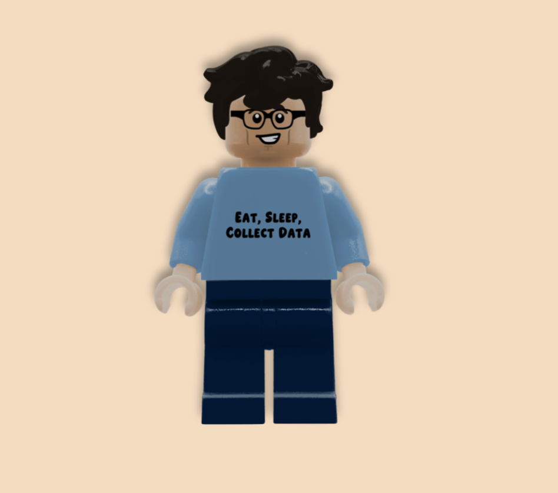

Samuel Love
Data Scientist & Software Engineer
Passionate about using data science and technology to create positive change. Currently training as a software engineer with degrees in Actuarial Science and Data Science.
About Me
Hello! I'm Samuel Love — welcome to my corner of the internet. Born in Australia and raised in New Zealand (I'm a dual citizen), I'm passionate about using my skills and dedication to create positive change.
I hold degrees in Actuarial Science and Data Science, and I'm currently training as a software engineer through the Institute of Data. I thrive on personal growth and overcoming challenges.
In my free time, I enjoy basketball, CrossFit, dog-walking, gardening, hiking, singing, swimming, and yoga.
Projects
DATA601: From Bricks to Bucks
Exploring Influential Variables in Sales Patterns of LEGO Bricks

This capstone project examined sales patterns of LEGO sets to predict their secondary market prices using machine learning. It compared licensed vs. original sets and analyzed trends in quantity, complexity, and price over time. Key steps included time-series analysis, clustering, and predictive modeling using linear regression, elastic net, random forest, and SVM algorithms.
🏀 NBA 2K Stat Attack
Interactive NBA Player Statistics Dashboard
A dynamic web application for exploring, filtering, and comparing NBA player statistics with interactive charts and team-themed visuals. Features advanced filtering, real-time search, and head-to-head player comparisons powered by NBA API data (~500 players).
Key Features:
- Interactive Chart.js visualizations
- Real-time player search & filtering
- Team-themed UI with all 30 NBA teams
- Head-to-head player comparisons
📚 BookTrackerDemo
Interactive Reading Progress Tracker
A comprehensive reading tracker application for managing your personal library with progress monitoring, book discovery, and personalized statistics. Features Google Books API integration, theme switching, and responsive design built with React 19 and Material-UI (~40M books).
Key Features:
- Real-time book search with Google Books API
- Progress tracking with visual indicators
- Advanced filtering and sorting system
- Theme switching (Light/Dark mode)
- Cross-tab synchronization
🗄️ Real-Time Database Application
Mini-Project #3
Project TBC covering database concepts including external API data fetching, MVC model implementation, full CRUD operations, and database population. Demonstrated via Postman or Swagger.
🎓 IOD Capstone Project
Software Engineering Capstone
Capstone TBC covering the full course curriculum and demonstrating comprehensive software engineering skills learned throughout the Institute of Data program.
Automating Transcription
Built a Python workflow to automatically transcribe audio using Whisper and clean text for reports. Streamlined the transcription process for medical documentation.
Australia Immigration Tool
Developed a visual tool to help NZ residents understand migration patterns to Australia. Interactive dashboard analyzing demographic trends and migration flows.
Academic Coursework
2021
COSC480
Computer Programming
Introduction to programming fundamentals and computational thinking for data science applications. Covered Python syntax, data structures, algorithms, and object-oriented programming concepts.
DIGI405
Texts, Discourses and Data
Exploring the intersection of humanities and data science through text analysis and digital methods. Applied computational techniques to literary and cultural texts.
STAT462
Data Mining
Fundamental techniques for discovering patterns and extracting insights from large datasets. Covered clustering, classification, and association rule mining methods.
2022
DATA422
Data Wrangling for Data Science
Advanced techniques for cleaning, transforming, and preparing messy real-world data for analysis. Focused on ETL processes and data quality assessment.
DATA423
Data Science in Industry
Real-world applications of data science methodologies in business and industry contexts. Emphasized project management and stakeholder communication.
STAT448
Big Data
Statistical methods and computational techniques for analyzing massive datasets using distributed computing frameworks and cloud platforms.
2023
DATA420
Scalable Data Science
Advanced methods for building scalable data science solutions using cloud computing and distributed systems. Emphasized MLOps and production deployment.
MBIS623
Data Management
Database design, data governance, and management strategies for enterprise data systems. Covered relational and NoSQL database technologies.
STAT455
Data Collection and Sampling
Statistical theory and practical methods for designing surveys and collecting representative data samples. Applied sampling techniques to real-world scenarios.
📚 Module 1 Lab Portfolio
Web Development Journey
Comprehensive portfolio covering web development fundamentals including command line mastery, HTML basics, interactive components, JavaScript functions, arrays, objects, testing, and a complete dice generator project.
🎨 Module 2 Lab Portfolio
Web Development Fundamentals
Advanced web development concepts including CSS styling, responsive design, JavaScript DOM manipulation, event handling, form validation, and modern web development practices.
⚡ Module 3 Lab Portfolio
JavaScript Programming
Deep dive into JavaScript programming concepts including advanced functions, data structures, asynchronous programming, API integration, and building interactive web applications.
Curriculum Vitae
About Me
I am currently completing a Software Engineering Programme through the University of Canterbury and the Institute of Data. I hold a Master of Applied Data Science from the University of Canterbury and am eager to launch my career in data science. My experience spans both office and customer-facing environments, where I developed strong communication and teamwork skills, further enhanced through extensive sporting pursuits. A disciplined and engaged lifelong learner, I bring curiosity, adaptability, and a data-driven mindset to solving real-world problems.
Qualifications
-
 Software Engineering Certificate Institute of Data & University of Canterbury (April 2025 – July 2025)
Software Engineering Certificate Institute of Data & University of Canterbury (April 2025 – July 2025) -
 Master of Applied Data Science University of Canterbury (2021–2024)
Master of Applied Data Science University of Canterbury (2021–2024) -
 BSc in Actuarial Science and Economics Victoria University (2017–2020)
BSc in Actuarial Science and Economics Victoria University (2017–2020)
Technical Skills
Python, R, SQL
Bootstrap, CSS, Express.js, Figma, HTML, JavaScript, JSX, React, Swagger.
AWS EC2, AWS Elastic Beanstalk, CI/CD, Docker, GitHub Actions.
Anaconda, Bash, GitHub, Jupyter, MongoDB, MySQL, Power BI, PostgreSQL, Redis, RStudio, Tableau
Agile, Model-View-Controller (MVC), Test Driven Development, Version Control (Git).
Excel, Incisive, Obsidian, PowerPoint, Quarto, Slack, Word, Zed, Zoom
 BeautifulSoup, Matplotlib, NumPy, Pandas, Plotly,
Scikit-learn
BeautifulSoup, Matplotlib, NumPy, Pandas, Plotly,
Scikit-learn
 caret, e1071, glmnet, ggplot2, randomForest, shiny,
tidyverse
caret, e1071, glmnet, ggplot2, randomForest, shiny,
tidyverse
Transferable Skills
Attention to Detail
Accurately maintained databases as a Transcriptionist &
File Clerk.
Customer Service
Resolved customer queries efficiently as a Store
Assistant.
Empathy
Engaged compassionately with neurodiverse youths.
Accountability
Worked independently and reliably for 1.5 years as a
remote Transcriptionist.
Communication
Studied NZSL and Te Reo Māori; currently learning
Mandarin Chinese.
Leadership
Represented NZ in basketball & swimming; captained the
WBHS swim team.
Employment History
Transcriptionist @ Aorangi Orthopaedic
Centre
Palmerston North
Nov 2021 – May 2024
Store Assistant @ Wanaka New
World
Wanaka
Summers 2017 – 2020
Caregiver @ Families of Special Needs
Individuals
Palmerston North
Holidays 2016 – 2024
File Clerk @ Amesbury Orthopaedic
Centre
Palmerston North
Apr 2016 – Feb 2018
File Clerk @ Alpha Business
Solutions
Auckland
Weekends 2014
Certifications
DataCamp
Data Literacy, AI Fundamentals, SQL Associate, Python
Data Associate, Data Engineer Associate
Digital Passport
Digital Skills, Job-Ready Skills, AI Skills
Merge NZ
NZSL Levels 1a–1e, 2a
Te Ara Atawhai
DOC Volunteering course
Feb–April 2025
First Aid (NZ)
Basics – 21/3/25
Te Wānanga o Raukawa
Poupou Huia Te Reo 1
Interests
CrossFit
Individual & team competitions.
Dog Training
Canine Good Basics Certification.
Foundation Agility Certification.
Gardening
Growing fruit & vegetables using permaculture
approach.
Singing
Voices Co 2023-Present.
6 concerts.
Swimming
Daily workouts.
Workshops
Bonsai, Cheese, Hydroponics, Kombucha, Painting,
Permaculture, Pottery, Seed Raising, & Sourdough.
Yoga
Daily workouts.